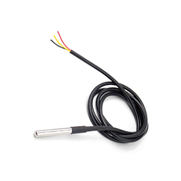
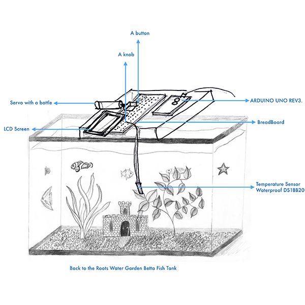
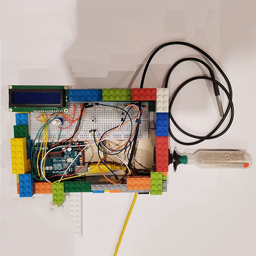
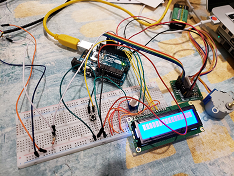
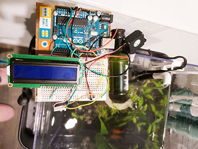
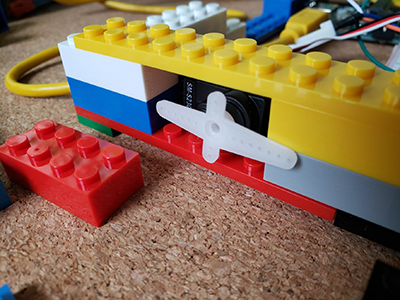
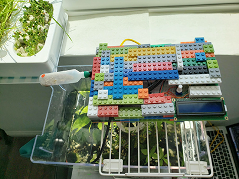
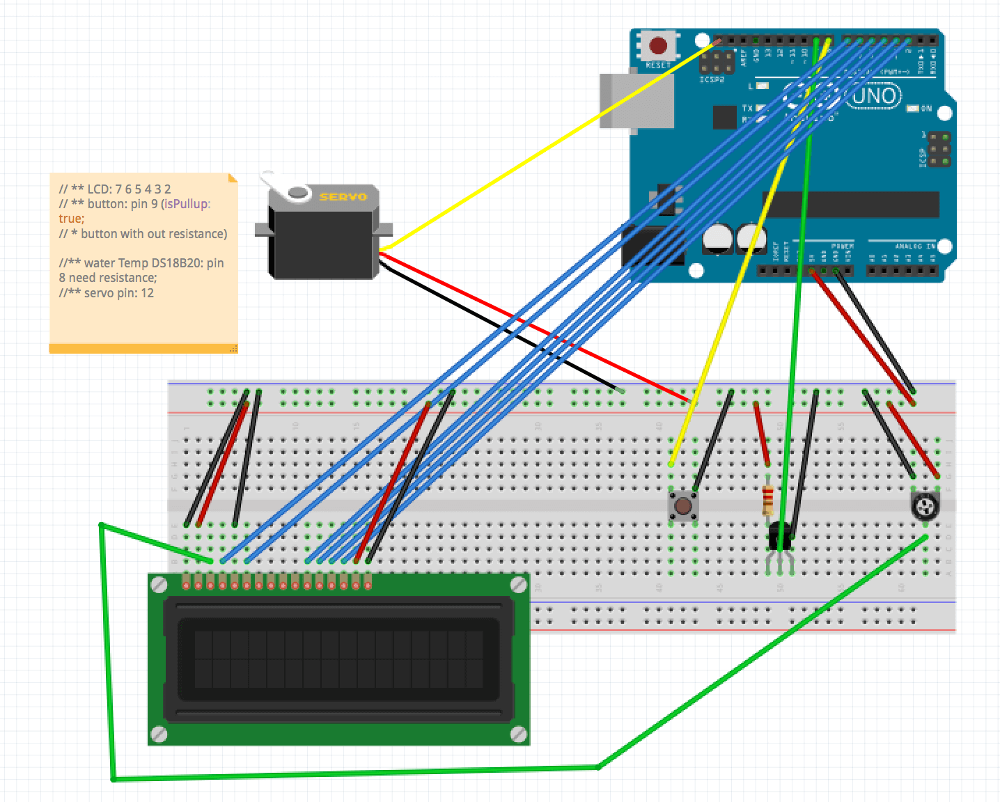

Water Temperature Sensor DS18B20

LCD Screen








Codes on GitHub
var five = require("johnny-five"), board, button, servo, lcd;
var directionCw = true;
board = new five.Board();
board.on("ready", function() {
lcd = new five.LCD({
pins: [7,6,5,4,3,2],
backlight: 6,
rows: 2,
cols: 20
});
button = new five.Button({
pin: 9,
isPullup: true
//* with out resistance on board
});
var servo = new five.Servo({
pin: 12,
type: "continuous", //* for CW
});
setInterval(function () {
if( directionCw ) {
servo.cw(2);
console.log("servo CW");
} else {
servo.ccw(2);
console.log("servo CCW");
}
directionCw = !directionCw;
}, 5000);
//* 5000 for every 5 seconds in the video Demo
var count = 0;
button.on("press", function() {
count++;
console.log('btn pressed ' + count.toString());
var pin = 8;
board.firmata = board.io;
board.firmata.sendOneWireConfig(pin, true);
board.firmata.sendOneWireSearch(pin, function(error, devices) {
if(error) {
console.error(error);
return;
}
//* only interested in the first device
var device = devices[0];
var readTemperature = function() {
// led.on();
// *start transmission
board.firmata.sendOneWireReset(pin);
// *a 1-wire select is done by ConfigurableFirmata
board.firmata.sendOneWireWrite(pin, device, 0x44);
// *the delay gives the sensor time to do the calculation
board.firmata.sendOneWireDelay(pin, 1000);
// *start transmission
board.firmata.sendOneWireReset(pin);
// *tell the sensor we want the result and read it from the scratchpad
board.firmata.sendOneWireWriteAndRead(pin, device, 0xBE, 9, function(error, data) {
if(error) {
//console.error(error);
return;
}
var raw = (data[1] << 8) | data[0];
var celsius = raw / 16.0;
var fahrenheit = celsius * 1.8 + 32.0;
console.info('celsius', celsius);
console.info('fahrenheit', fahrenheit);
// updateLed(celsius, led)
// led.off();
//* to show on LCD
lcd.cursor(1, 0).print( `Water :${fahrenheit} ` );
//console.log("LCD water temp");
});
};
});
});
this.repl.inject({
lcd: lcd,
button: button,
servo: servo
});
});